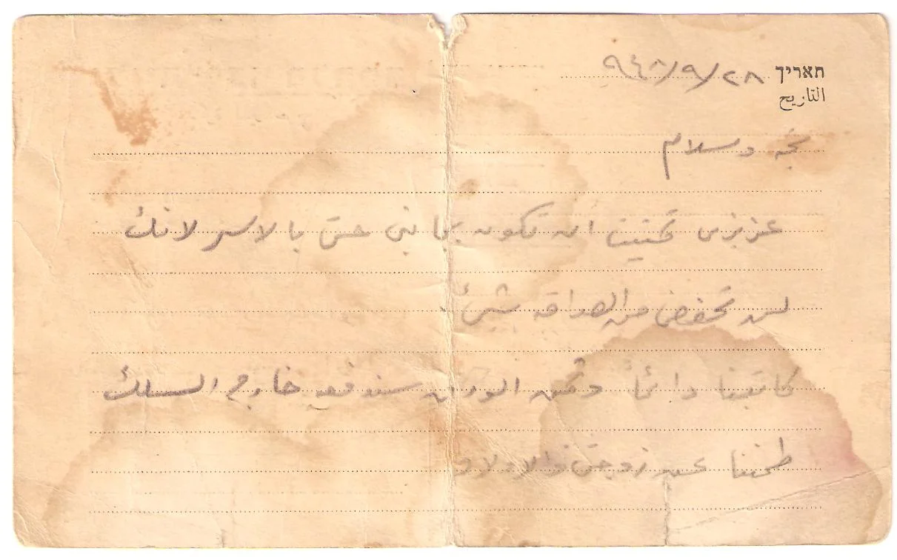
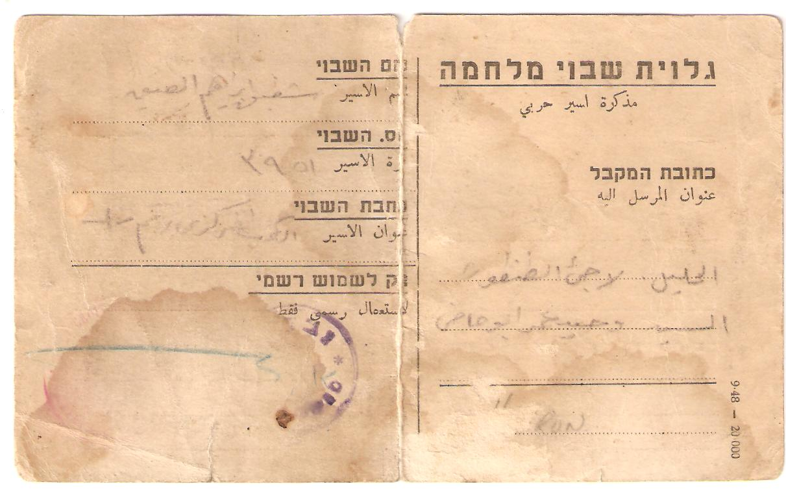

تنتمي عائلة آل أبو ماضي / الماضي إلى قرية الطنطورة في قضاء حيفا، وتعود في أصلها القروي والتاريخي إلى إجزم من بني هرماس، حيث كان مركز آل ماضي التاريخي.
ويظهر اسم “آل ماضي” في إجزم بوصفه الاسم التاريخي الأوسع للعائلة، بينما استقر اسم “آل أبو ماضي” في الطنطورة بوصفه اسم الفرع المحلي المعروف.
يجمع سجل عائلات الطنطورة بين الاسمين في نص واحد:
“آل أبو ماضي: أصلهم من أجزم من بني هرماس وهناك مركزهم، ومن زعامة آل ماضي في الطنطورة محمد الماضي (أبو يحيى).”
ومن هذا الفرع الطنطوري الشهيد رشيد ابن عمر أبو ماضي، ومن ذريته وصفي رشيد عمر أبو ماضي وأبناؤه: باسل، محمد، علاء، وسيم، لؤي، ميسون، وسهير. ومن فرع شقيقه وحيد عمر أبو ماضي ابنه عمر وأبناؤه: وحيد، محمد، سعد، رولا، مريم، سعدية، آمنة، وعبدالله.



